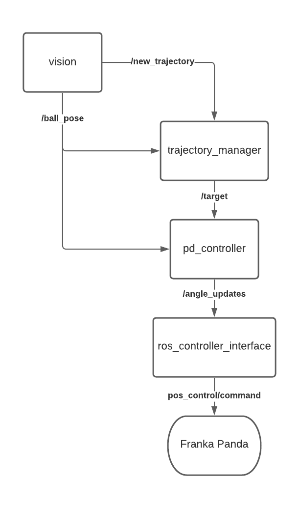
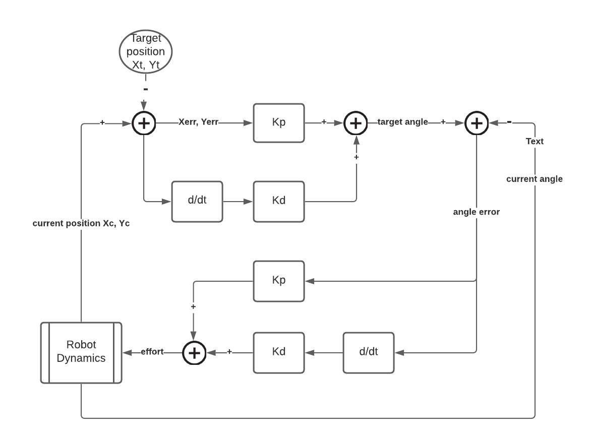

Balance the Board
October 2021 - December 2021Balance the Board on a 7 dof Franka-Emika to control the trajectory of a ping pong ball
Overview
In this project, a ping-pong ball's trajectory was controlled using Franka Panda robot to manipulate a white board. The ping pong ball can be controlled to do two functionalities:
- Follow a line trajectory drawn on a white board.
- Follow the path solved by our maze solver algorithm, with a maze drawn on a white board.
The project consists of two main parts. First part is the perception, where we used a real sense camera as our sensor to capture the transient positions of ball and board, and used OpenCV library to process the sensing images. Second part was the control of the ball. There were two PD controllers that were implemented to control the ping-pong ball and make it follow the target trajectory on the white board. The higher level control loop takes ball positions as input and outputs desired angles of corresponding two arm joints. Then the updated joint angles received by the low level control loop. By tuning PD gains, this loop was able to send desired efforts to robot arm through ros_control topic.
Team members: Devesh Bhura, Davin Landry, Kevin Nella, Daelan Roosa, Haozhi Zhang
Video Demo
Waveform Path:
NU Path:
Maze:
Quickstart Guide
- Set up robot and connect to work station: https://nu-msr.github.io/me495_site/franka.html; Connect real sense camera.
- Command to launch all nodes needed: roslaunch balance_board maze.launch
- To set robot to home position: rosservice call /home
- The command for each of the two options:
- To draw a line trajectory on the board: rosservice call /line_follow
- To draw a maze on board: rosservice call /maze_follow
- After trajectory has been generated, to start: rosservice call /start
- To finish playing, call: rosservice call /stop
Package Details
balance_board: main ros package
maze.launch, the main launch file including:
- a launch file pd_controller.launch: a sub launch file.
- a node trajectory_manager : take inputs of current ball pose and map parameters from vision node in each frame, output the target ball pose.
pd_controller.launch:
- ros_control_interface.launch : a sub launch file.
- vision: a node using OpenCV libary processing images to output a current ball pose in each frame and map parameters.
- a node pd_controller: a node using a high-level tuned PD controller to calculate a desired angle update in each frame.
ros_control_interface.launch :
- panda_control_moveit_rviz.launch: a launch file to initialize basic robot configurations.
- pos_control_spawner: a node to spawn a position controller in ROS.
- ros_control_interface: a node using a low-level tuned PD controller to give the desired effort command to robot.
Architecture
Control Loop
Computer Vision
An intel Realsense D435i camera is used detect the realtime location of the ball and the marks on the board. It does this by color thresholding the colors orange, blue, pink, and purple for the ball, waypoint 1, waypoint 2, and the maze respectivly. The vision pipeline processes and extracts the data by creating a pixel mask, calculating the contrours, and extracting the centroids of those contours. The ball coordinates are published as a Ball_Pose() msg to the ball_pose topic. The maze mask data is passed to the service callbacks relating to the maze_follow and line_follow services. It then draws all contours over image feed and displays the resulting images in realtime.
Maze Solver Algorithm
The Breadth First search method is used to solve the maze and generate a trajectory for the ball to follow. To do so, the algorithm computes two cost maps, one where the points farthest away from the walls of the maze are assigned the lowest value, and another cost map that assigns higher value to the points furthest away from the starting point. The algorithm adds these two maps and does gradient descent from the start point to the goal, interating through the neighboring cells and finding a path.
Future Improvement
When we set our start position on the corners of board, sometimes the ball is hard to be balanced initially and could cause drastic motion of robot arm. One way to solve this issue might be adding more dimensions in our control by using more joints to achieve more dynamical balance when putting the ball in any position.